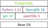

The self abolishment of the enterprise Linux Distribution
who -u
Dan Čermák
| Software Developer @SUSE, SLE BCI releng | |
| i3 SIG, Package maintainer | |
| Developer Tools, Testing and Documentation, Home Automation | |
| https://dancermak.name | |
| dcermak | |
| @Defolos@mastodon.social |
TODO Agenda
Where did we start?
- Pet servers
- Software runs from system packages
- long development cycles
- setup, never touch again & forget machines
Where are we now?
- Cattle servers
- Rapid development
- Much larger dependency tree
- Container deployment
but "the old way" is still there
What's the problem?
- LTS maintenance harder/more expensive
→ reduce package set
→ update packages during LTS
The vicious cycle
- fewer and outdated packages + missing dependencies
- less interesting development target
- less interesting deployment target
Containers to the rescue!
Modularity to the rescue!

Questions?
Answers!